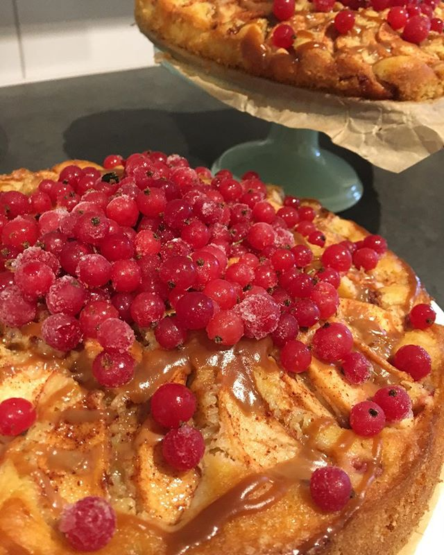

Mängd:
6 portioner
Du behöver:
- 100 g margarin alternativt smör
- 2 dl vetemjöl
- 1 dl havregryn
- 1 dl strösocker
- 2 msk ljus sirap
Fyllning:
- 5-6 st äpplen
- 1 msk kanel
- 5 msk strösocker
Gör så här:
- Sätt ugnen på 200 grader.
- Skala och skiva äpplena i tunna klyftor och blanda med kanel och socker och lägg i en pajform.
- Blanda ihop alla ingredienserna till pajdegen till en smulig deg och smula över de skivade äpplena.
- Grädda pajen mitt i ugnen i 25-30 minuter.
- Servera med vaniljsås, glass eller lättvispad grädde.